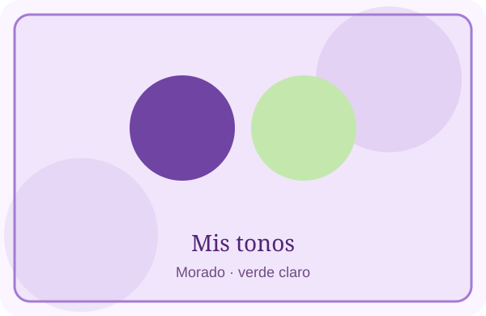
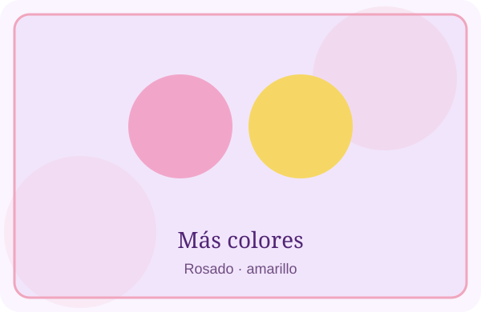

Mis colores favoritos son el morado, el verde claro, el rosado y el amarillo. Me gusta cómo se ven tanto por separado como combinados.


El morado es uno de los tonos que más me llaman la atención. Los otros colores también me gustan porque son alegres y suaves.